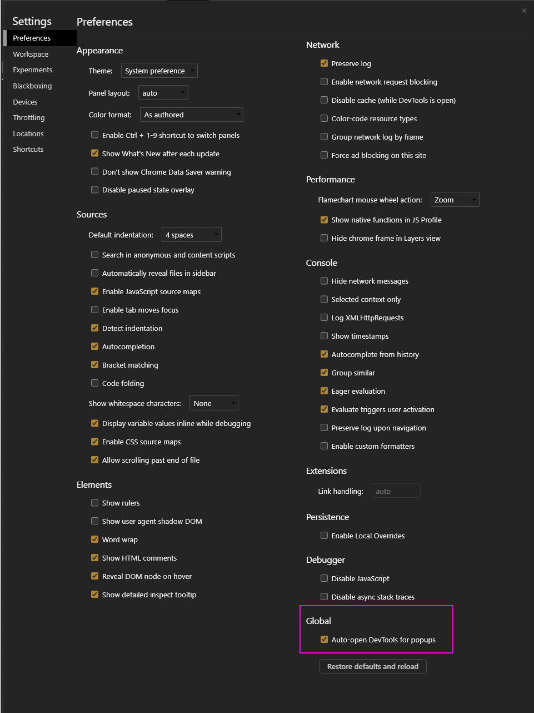

25 LTI Information for Carnap Developers
Setting up a Canvas instance or other LMS is quite burdensome for doing LTI testing. Therefore, the UBC Carnap team has kindly set up a LTI Reference Implementation platform here:
https://lti-ri.imsglobal.org/platforms/1255/
Configure it in Carnap at /master_admin with the following:
| iss | client_id | OIDC Auth Endpoint | JWK URL |
|---|---|---|---|
| aaaaa | abcde | https://lti-ri.imsglobal.org/platforms/1255/authorizations/new | https://lti-ri.imsglobal.org/platforms/1255/platform_keys/1248.json |
To perform launches, use the “Resource Links” page.
25.1 Debugging
Carnap records LTI tokens (with student data removed) to its server logs for the purposes of debugging automatic LTI registration, allowing to find out why automatic registration is failing. If that is not sufficient, some debugging can be done client-side by looking at browser request logs in the network tab of the developer tools:
Most of the process can be traced with dev tools. Note that Chrome now has a feature called “Auto-open DevTools for popups” that is ideal for debugging LTI failing to initiate properly in a popup. Remember to enable “Preserve log” before testing the problematic path.
These settings are accessible here:
Click the gear icon at the top right of the DevTools panel:

Then the setting is in the bottom right under Global:

Using this feature and the network tab, you can find the failing initiate/other request and figure out what the LMS is sending with its requests and how Carnap reacted.
Let’s go through a successful sequence of requests in DevTools. My Canvas is at http://ubuntu-vm:8900 and my Carnap is at https://ubc-carnap-staging.lfcode.ca (these are both test instances running on virtual machines on my computer).
I click the “Carnap” link in the Canvas sidebar. A new tab opens, Canvas goes through a couple of pages itself before sending us to Carnap.
First we have a POST to Carnap’s /auth/page/lti13/initiate with the following parameters in the form data:
iss: https://canvas.instructure.com
login_hint: f326d6a8a55f30f47b2480586f97991ab9e602bb
client_id: 10000000000002
target_link_uri: https://ubc-carnap-staging.lfcode.ca/
lti_message_hint: some-long-jwt-that-is-opaque-per-the-standard
canvas_region: not_configuredThe main thing to note here is that this is where Carnap has to decide where to send the user back to. This is done with a combination of iss and client_id, the latter of which is optional and we do our best if it’s not there.
Carnap finds a record in its LTI platforms with the issuer and client_id pair, so it sends a 303 redirect to http://ubuntu-vm:8900/api/lti/authorize_redirect as configured in the Carnap LTI settings.
Carnap sends the browser a redirect to this URL:
http://ubuntu-vm:8900/api/lti/authorize_redirect
?scope=openid
&response_type=id_token
&client_id=10000000000002
&redirect_uri=https%3A%2F%2Fubc-carnap-staging.lfcode.ca%2Fauth%2Fpage%2Flti13%2Fauthenticate
&login_hint=f326d6a8a55f30f47b2480586f97991ab9e602bb
&state=3CjT-Wa3RKZjgge6bjPNEycuOToQdTUa1ELW3Jx38Gh6&response_mode=form_post
&nonce=eara1fJmG39MIIijSv-ehGUMJsX2SVhlYhGZdxcsCJKa
&prompt=none
<i_message_hint=some-long-jwt-that-is-opaque-per-the-standardThings of note in this request:
- We generate the
redirect_uri. - The
client_id,login_hint, andlti_message_hintare just from Canvas’ initiation stateandnonceare just randomly generated strings we check on the way back.- Some of these parameters are kept in the session by Carnap, so if cookies don’t work, we fail either at this request or the next.
The browser hits Canvas at that URL, and it bounces around a bit before coming back to Carnap with a POST https://ubc-carnap-staging.lfcode.ca/auth/page/lti13/authenticate.
Its parameters are:
utf8: ✓
authenticity_token: VtRVOQdeoLQqfnzuNSa3kfg8vyuhcWj8lhsehEsmhx4ukCdsPxiT/3MYF416c+Tiyw7zGZFAGpfeTXPXAkTFRg==
id_token: ey -- THIS IS A VERY LONG JWT TOKEN --
state: 3CjT-Wa3RKZjgge6bjPNEycuOToQdTUa1ELW3Jx38Gh6We don’t care about any of these except for the very long id_token, which is a JSON Web Token.
Carnap receives this, performs autoregistration, and goes to the user page. Thus, this is where you will want to start looking if you are having issues with attributes getting across, for example names, emails, etc.